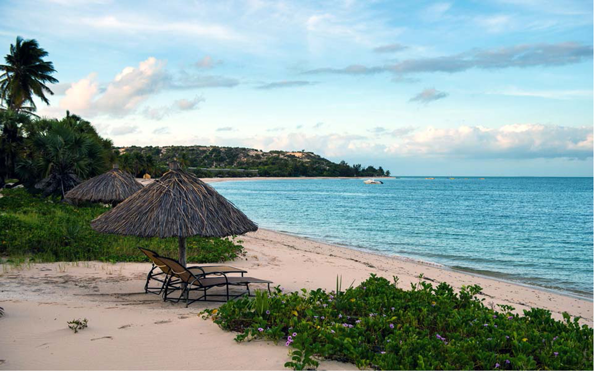
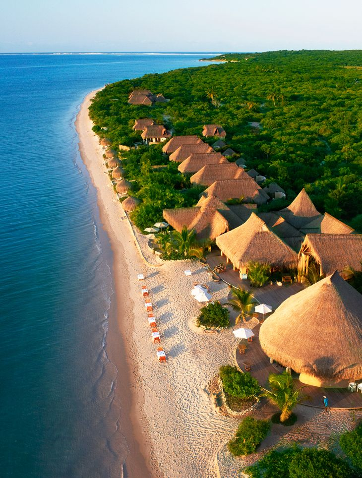
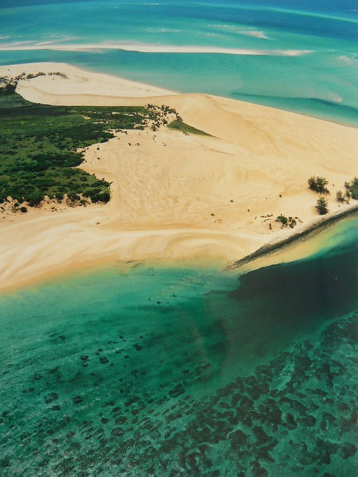
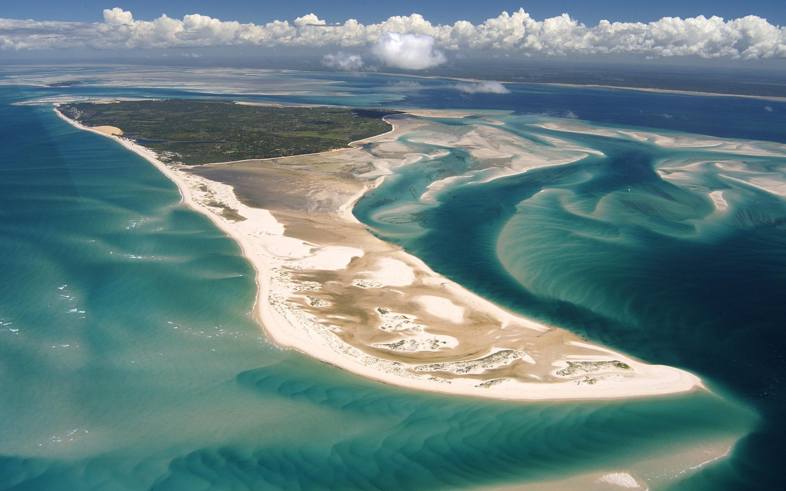

Африка
Африка
Килиманджаро

Килиманджаро — высочайший стратовулкан Африки, находящийся на северо-востоке Танзании, высочайшая точка континента - 5895 метров над уровнем моря.
В 2003 году учёные пришли к выводу, что расплавленная лава находится всего в 400 метрах под кратером главной вершины Кибо. Хотя и не прогнозируется другой активности, кроме происходящих сейчас выбросов газа, существуют опасения, что вулкан может обрушиться, что приведёт к крупному извержению наподобие вулкана Сент-Хеленс.
Высочайшей точкой горы и Африки является пик Ухуру вулкана Кибо, 5895 м, относящийся к «Семи вершинам». Пик был впервые покорён Гансом Мейером и Людвигом Пуртшеллером в 1889 году.
Архипелаг Базаруто, Мозамбик
Национальный парк архипелага Базаруто — охраняемая территория в Мозамбикской провинции Иньямбане включающая архипелаг Базаруто. Парк был основан 25 мая 1971 года и находится у побережья районов Виланкулос и Иньяссоро, охватывая обширную площадь океана и шесть островов.
Парк был создан для защиты дюгоней и морских черпепах, а также их среды обитания. под охрану также были взяты флора и фауна островов, коралловые рифы и морские птицы. Самый большой остров — Базаруто, другие — Бенгуэрра, Маргаруке, Санта-Каролина, Банке и Панси.


На архипелаге в семи поселениях проживает около 3500 жителей. В основном они очень бедны и заняты добычей водных ресурсов. 70% домохозяйств, чтобы выжить полагаются на мелкое рыболовство, в то время как другие собирают песчаных устриц и другие морские ресурсы, выращивают урожай и разводят скот.
Ботсвана, дельта Окаванго
Дельта Окаванго — самая большая внутренняя дельта планеты, не имеющая при этом стока в мировой океан. Дельта заболочена, мелководна, главный источник воды в этом регионе, примыкающем к пустыне Калахари — это река Окаванго, стекающая с возвышенностей Анголы.
Площадь современных остаточных водоёмов — около 15 000 км², которые во время разлива после дождей могут достигать 22 000 км². Ежегодный приток воды в дельту — порядка 11 км³. Часть вод в полноводные годы прорывается к югу и питает озеро Нгами.
Дельта стала прибежищем для разнообразных растений. Верхняя часть дельты покрыта густыми зарослями тростника, в которых доминирует папирус. Тут же встречаются участки, постоянно покрытые водой, где растет множество кувшинок. В низовьях дельты Окаванго заросли тростника уступают место колючим зарослям акации и пойменным лугам.
Окаванго идеально подходит для различных животных, в том числе бегемота, крокодила и нескольких видов антилоп. Из них особенно примечательна ситатунга, приспособившаяся к жизни среди воды и обитающая главным образом в наиболее непроходимых областях дельты Окаванго и в других сходных районах Африки. Другое семейство антилоп, даже более специфичное для Южной Африки, тоже приспособившееся к водной среде — водяные козлы, представленные болотным козлом.
Водопад Виктория, Зимбабве
Виктория — водопад на реке Замбези в Южной Африке. Расположен на границе Замбии и Зимбабве. Ширина водопада — примерно 1800 метров, высота — 120 метров. Виктория — единственный водопад в мире, одновременно имеющий более 100 метров в высоту и более километра в ширину.
Шотландский исследователь-путешественник Дэвид Ливингстон, побывавший на водопаде в 1855 году, назвал его в честь королевы Виктории. На языке лози коренного населения этих мест водопад был известен как Моси-оа-Тунья — «гремящий дым»
Расход воды от 1,4 до 14 тыс. м³/с. Четвертый в мире по ширине и один из крупнейших по расходу воды.
Водопад находится на территории двух национальных парков — Моси-оа-Тунья в Замбии и Виктория-Фолс в Зимбабве. Оба они небольшие и имеют площадь 66 и 23 км², соответственно. На территории национальных парков обитают дикие животные, включая многочисленные стада слонов и семьи жирафов, в реке — многочисленные гиппопотамы. В национальный парк Моси-оа-Тунья из Южной Африки завезены два белых носорога.